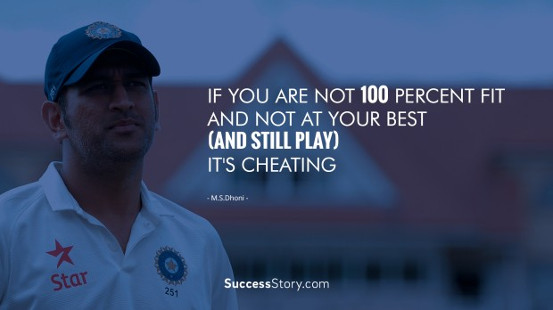

A cricket ball is made from cork strips and a tightly wound string. It is then covered by a leather case with a slightly protruding seam. The outer layer of a ball, which is covered by the highest quality leather, is cut into four pieces. The seam of a cricket ball has a total of 6 stitches, 1 on either side.

[Bowlers chokes pakistan before Healy powers Australia to one sided-win]
|  | Captain Cool is the story of M.S. Dhoni, Indian cricket's poster boy, it is also the heartwarming account of the life of a young man who won India the World Twenty20 in 2007 and the 50 over World Cup title in 2011 but can still tell his throngs of admirers, 'I am the same boy from Ranchi'. |
© 2022 ESPN Sports Media Ltd. All rights reserved